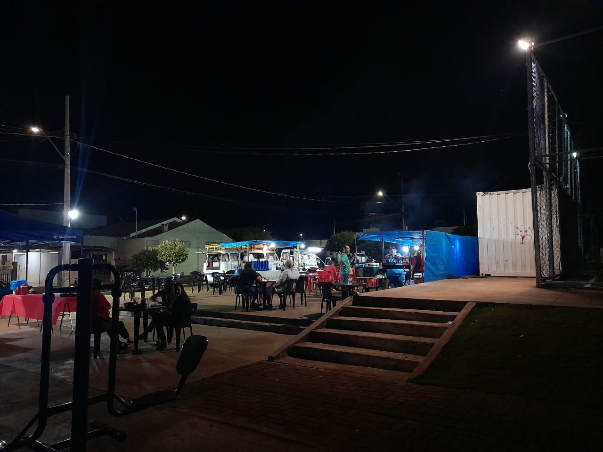

Feira Jardim Aeroporto
A Feira do Jardim Aeroporto tem como objetivo trazer os recursos com mais demanda para a população.
Horários: 12:00 - 15:00

Feira tropical 1
A Feira do Tropical 1 tem como foco o comércio de frutas para a população.
encerrou a feira, a feira acontece entre: 12:00 - 15:00